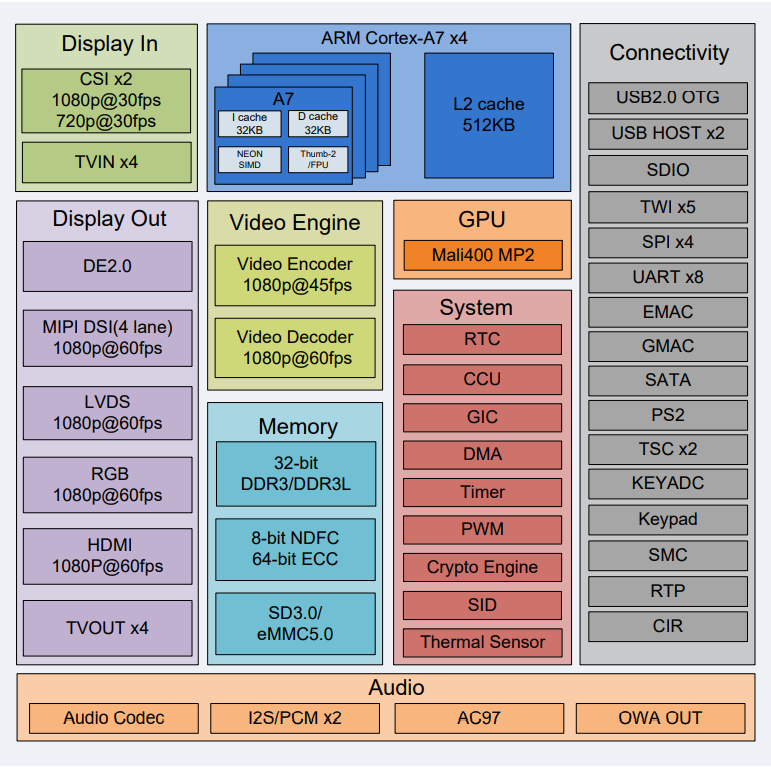
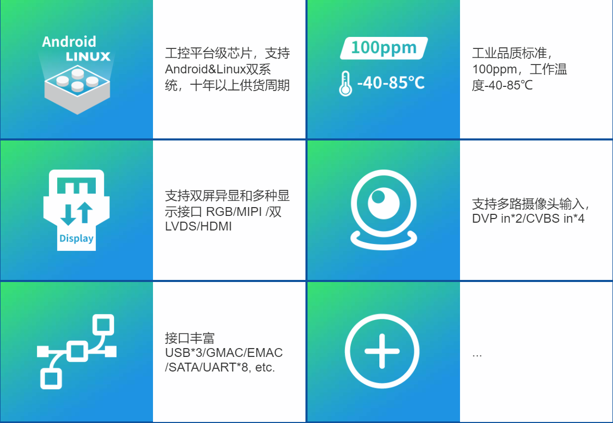
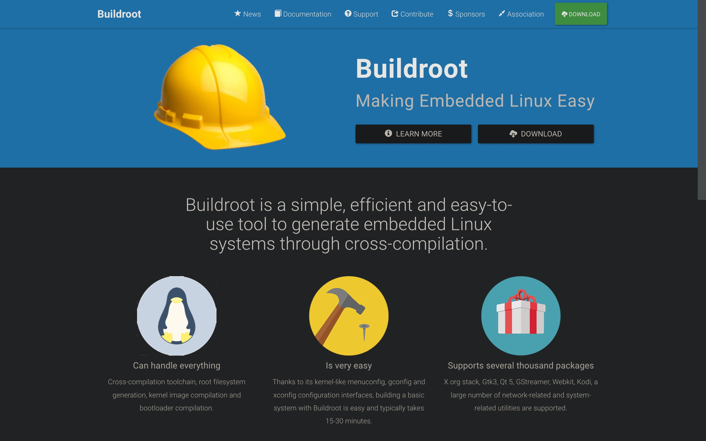
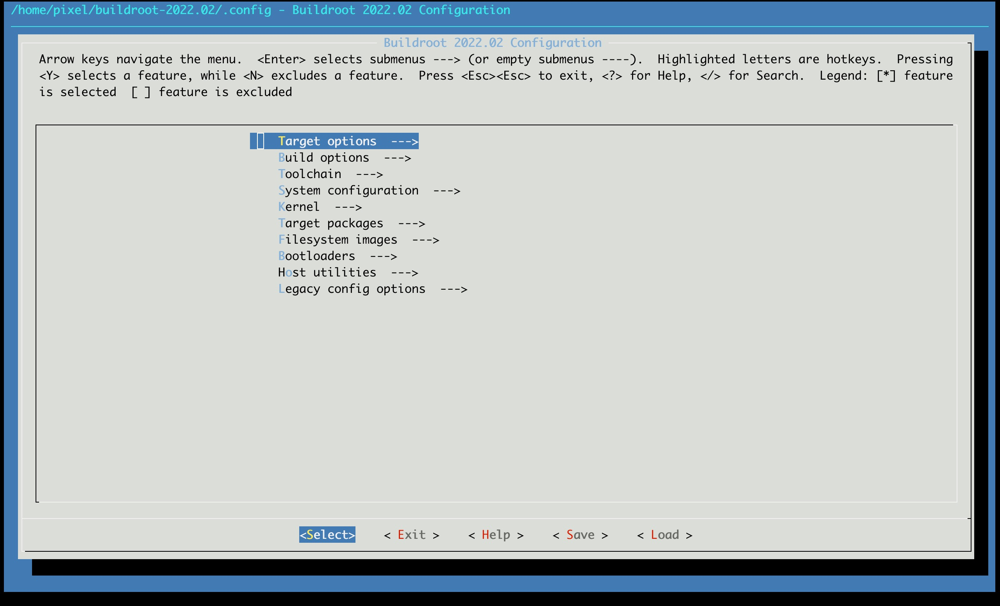
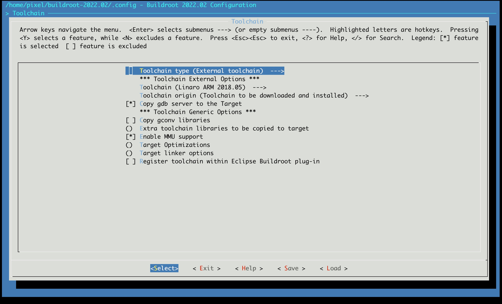

1 介绍
合信HMI新平台硬件方面采用全志A40i作为主控芯片，软件采用Buildroot作为HMI固件的开发环境
1.1 芯片介绍
全志工业级A40I (A40i/R40/V40/T3)
- 四核Cortex-A7，主频最高为1.2GHz，集成 Mali400MP2 GPU；
- 支持双屏同显异显和多种显示接口RGB/MIPI /双8位 LVDS /HDMI/TV OUT，1920x1080@60fps；
- 支持1路千兆网络，1路百兆网络，支持WIFI/BT4.0，支持4G；
- 支持多路摄像头输入，两路DVP摄像头接口，最高支持500W像素，四路TVIN，支持NTSC与 PAL制式
- CPU内部集成Audio Codec，支持1路差分PHONEOUT，1路立体声耳机输出 ,1路microphone输入
- 外部扩展接口丰富UART 8、SD4、USB3、SPI4、IIC5、SATA、PWM8等；
- 支持Linux和Android操作系统；
| 功能 | 描述 |
|---|---|
| CPU | ARM Cortex-A7 Quad-Core 32 KB (Instruction) / 32 KiB (Data) L1-Cache per core 512 KB L2-Cache (shared between four cores) |
| GPU | ARM Mali400 MP2Featuring 1 vertex shader (GP) and 2 fragment shaders (PP) Complies with OpenGL ES 2.0 |
| Memory | DDR2/DDR3/DDR3L/LPDDR2/LPDDR3 controller up to 2GB address space NAND Flash controller and 64-bit ECC |
| Video | Full HD 1080p video decoding of MPEG-2, MPEG-4 SP/ASP GMC, H.263, H.264, WMV9/VC-1, and VP8 BD Directory, BD ISO and BD m2ts video decoding H.264 High Profile 1080p @ 45 fps encoding Complies with RTSP, HTTP,HLS,RTMP,MMS streaming media protocol |
| Camera | 4-channel TVIN Dual-sensor support |
| Audio | Integrated HI-FI 100 dB Audio Codec Dual MIC noise cancellation |
| Display | Supports output size up to 2048x2048 CPU/RGB/LVDS LCD interface 1920x1080@60fps MIPI 4 lane DSI interface up to 1920x1080@60fps resolution TV out: 4-ch CVBS, 1-ch YPbPr and 1-ch VGA HDMI v1.4 with HDCP 1.2, up to 1920x1080@60fps |
| Connectivity | 3 X USB 2.0 , 5 x TWI, 4 x SPI, 8 x UART RTP PS2 SDIO, IR, |
| PMIC | AXP221s |
| OS | Melis, Linux OS |
| Package | FBGA 468 balls,0.65mm ball pitch, 16x16 mm |
| Process | 40nm |


参考链接
1.2 Buildroot开发环境
1.2.1 Buildroot 简介
Buildroot 是一个简单高效、易于使用的可通过交叉编译来构建嵌入式 Linux 系统的工具。 它能够处理交叉编译工具链、根文件系统生成、内核镜像编译和引导加载程序编译等，还支持数千种软件包，例如 Gtk3、QT5、GStreamer、Webkit 以及大量与网络相关、系统相关的实用工具。Buildroot 采用类似于 linux 内核的 menuconfig、gconfig 和 xconfig 配置界面，因此使用 Buildroot 构建一个基本的系统是非常轻松的，这通常会花费 15-30 分钟。同时，Buildroot 是一个开源项目，开发者可以对它做出贡献，来让 Buildroot 变得更加完善。


1.2.2 Buildroot 使用简介
1.2.2.1 Buildroot目录结构
├── arch //存放CPU架构相关的配置脚本，例如ARM，X86，MIPS等
├── board //存放开发板的板级配置参数
├── boot //存放Bootloader的自动构建脚本
├── CHANGES
├── Config.in
├── Config.in.legacy
├── configs
├── COPYING
├── DEVELOPERS
├── dl //存放下载的源代码以及应用软件的压缩包
├── docs //存放相关的参考文档
├── fs //存放生成文件系统镜像的建构脚本
├── linux //存放Linux Kernel的自动构建脚本
├── Makefile
├── Makefile.legacy
├── output //存放编译生成输出的文件
├── build //存放源代码解压编译完成后的现场
├── host //存放制作好的编译工具链，例如GCC，交叉编译链工具等
├── images //存放Buildroot编译最终生成生成的Bootloader,zImage,rootfs 等镜像文件
├── staging
└── target //用来存放建构根文件的基本目录结构，放置交叉编译生成的ELF可执行文件和so动态库
├── package //存放第三方开元包的自动编译构建脚本
├── README
├── support
├── system //存放文件系统目录和设备节点的模板
├── toolchain //存放制作工具链的脚本
└── utils
1.2.2.2 关于工具链
编译工具链是一组允许您为目标系统编译代码的工具。它由一个编译器(在我们环境下为 gcc)、二进制工具(比如汇编器和链接器，在我们环境下为 binutils)以及一个 C 标准库(如 G NU Libc、uClibc-ng)组成。 安装在开发工作站上的系统肯定已有一个编译工具链，可用它来编译在系统上运行的应用程序。如果使用的是 PC，则该编译工具链可在 x86 处理器上运行，并为 x86 处理器生成代码。
在大多数Linux系统中，编译工具链使用GNU libc(glibc)作为C标准库。这种编译工具链称 为“宿主机编译工具链”。工具链在上面运行并且您在其上工作的计算机称为“宿主机系统” 。 编译工具链由您的发行版提供，而 Buildroot 与它无关(除了使用它来构建交叉编译工具链和在开发主机上运行的其他工具)。 如上所述，系统随附的编译工具链可在宿主机上运行并为宿主机系统中的处理器生成代码。
由于嵌入式系统具有不同的处理器，因此需要交叉编译工具链-一种能在主机系统上 运行但为目标系统(和目标处理器)生成代码的编译工具链。例如，如果主机系统使用x86，而目标系统使用 ARM，则主机上的常规编译工具链是在 x86 上运行并为 x86 生成代码，而 交叉编译工具链是在 x86 上运行并为 ARM 生成代码。
Buildroot 为交叉编译工具链提供两种解决方案:
- 内部工具链后端，在配置界面中调用“Buildroot toolchain”。
- 外部工具链后端，在配置界面中调用“External toolchain”。
本次选择External toolchain

1.2.2.3 常用命令
| 命令 | 描述 |
|---|---|
make menuconfig |
打开交互式配置菜单 |
make |
基于当前配置构建系统，包括交叉编译工具链、内核、文件系统、设备树等 |
make clean |
清除构建过程中生成的所有临时文件，但保留配置文件 |
make distclean |
清除构建过程中生成的所有临时文件及生成的配置文件 |
make savedefconfig |
将当前配置保存为默认配置文件，可以用于后续使用 |
make xxx_defconfig |
选择特定板子的默认配置 |
make linux-menuconfig |
打开内核交互式配置菜单，允许用户选择内核编译选项、驱动程序等 |
make linux-clean |
清除内核构建期间生成的临时文件和目标文件 |
make linux-dirclean |
清除内核生成的所有文件和目标文件 |
make busybox-menuconfig |
打开 Busybox 交互式配置菜单，允许用户选择 Busybox 包含的工具、选项等 |
make busybox-clean |
清除 Busybox 构建过程中生成的临时文件和目标文件 |
make busybox-dirclean |
清除 Busybox 生成的所有文件和目标文件 |
make sdk |
创建 SDK 工具包，其中包含交叉编译工具链和 rootfs 文件系统等，可用于将应用程序交付给其他开发人员或客户 |
make命令通常将执行以下步骤：
- 下载源文件（根据需要）；
- 配置、构建和安装交叉编译工具链，或仅导入外部工具链
- 配置、构建和安装选定的目标软件包；
- 构建内核映像（如果配置了该选项）
- 构建引导加载程序映像（如果配置了该选项）
- 以选定的格式创建一个根文件系统
参考链接：